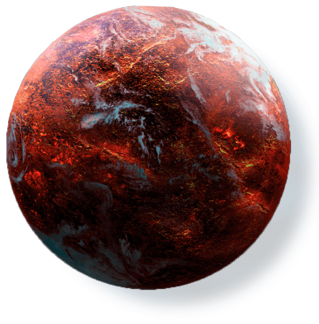

menu
menu

back
star wars
coruscant
endor
hoth
kamino
mustafar
naboo
tatooine

Coruscant, also known as Imperial Center during the rule of the Galactic Empire, was an ecumenopolis—a city-covered planet, collectively known as Galactic City— in the Coruscant system of the Core Worlds.
Endor, designated IX3244-A, also known as the Forest Moon of Endor or the Sanctuary Moon, was a small forested moon that orbited the Outer Rim planet of the same name and was the homeworld of the sentient Dulok, Ewok, and Yuzzum species, as well as the semi-sentient Gorax and Wistie races.
Hoth was a remote, icy planet that was the sixth planet in the star system of the same name. It notably hosted Echo Base, the temporary headquarters of the Alliance to Restore the Republic, until the Galactic Empire located the Rebels.
Kamino was an aquatic planet located in an extragalactic star system that straggled south of the Rishi Maze satellite galaxy and beyond the larger galaxy.
Mustafar was a small volcanic planet located in the Mustafar system, situated between two gas giants in the Outer Rim Territories that was aligned with the Confederacy of Independent Systems during the Clone Wars.
Naboo was a bountiful planet in the Mid Rim, close to the border of the Outer Rim Territories. It was home to the Gungan species and to a population of humans known as the Naboo.
Tatooine was a sparsely inhabited circumbinary desert planet located in the galaxy's Outer Rim Territories. It was the homeworld to the influential Anakin and Luke Skywalker, who would go on to shape galactic history.
more